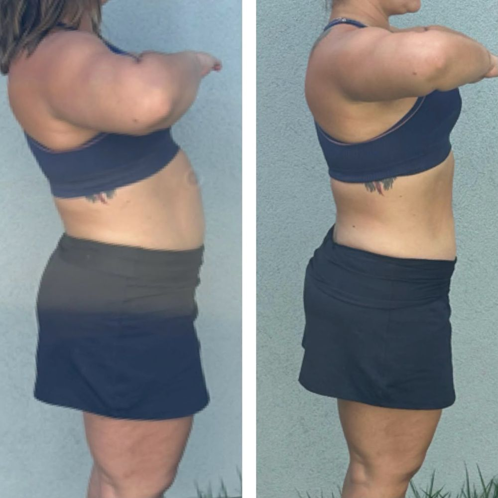
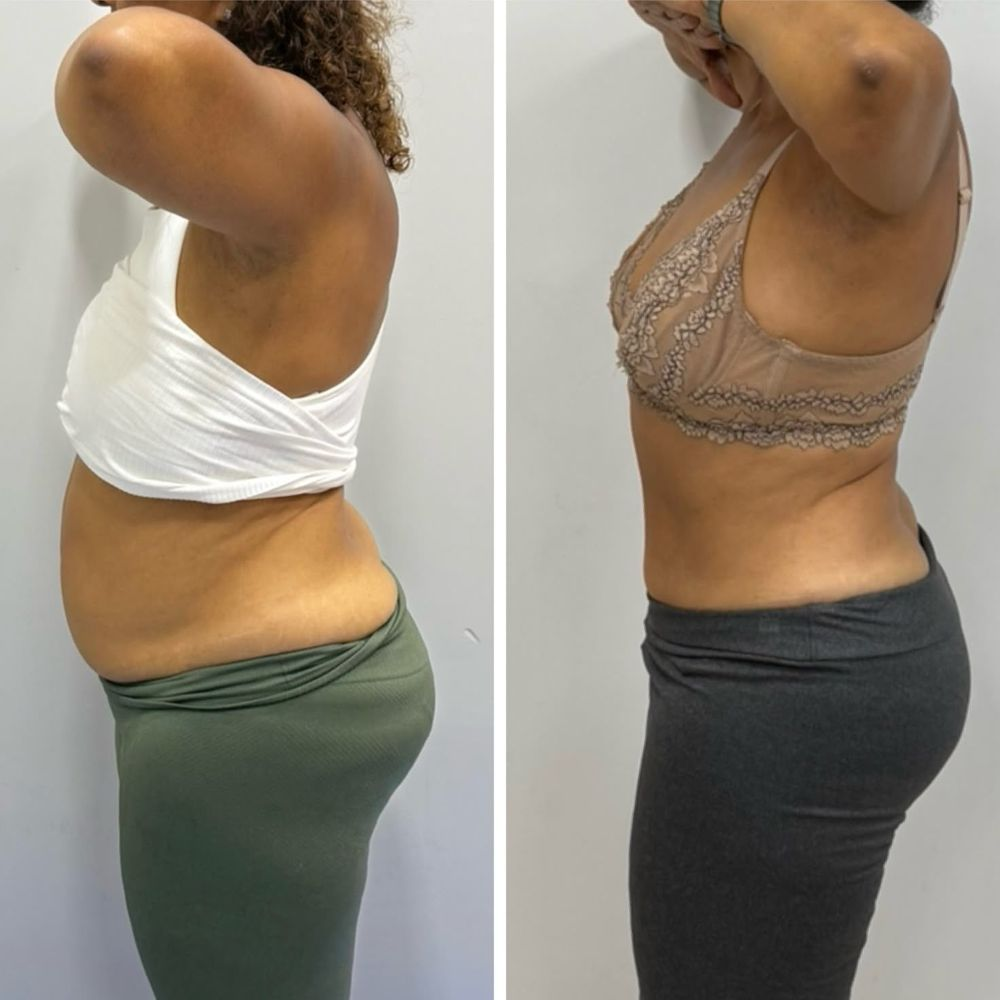
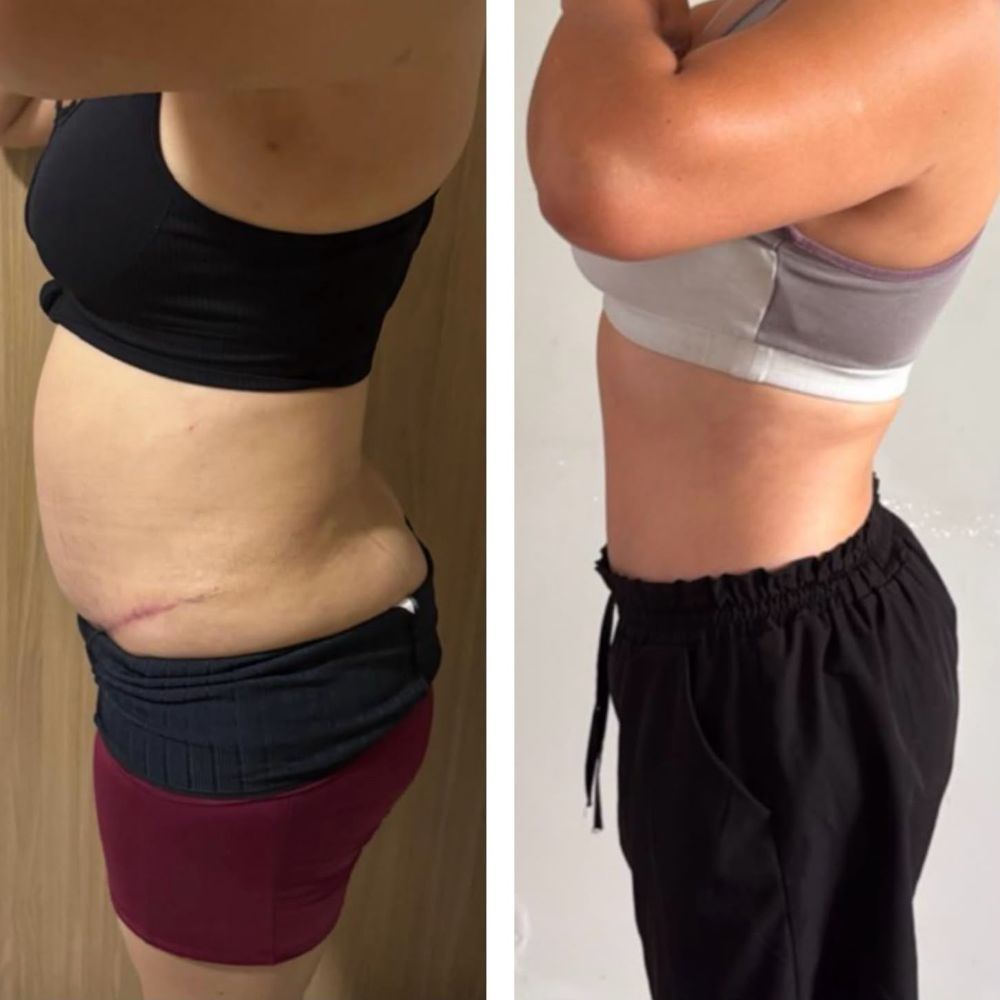
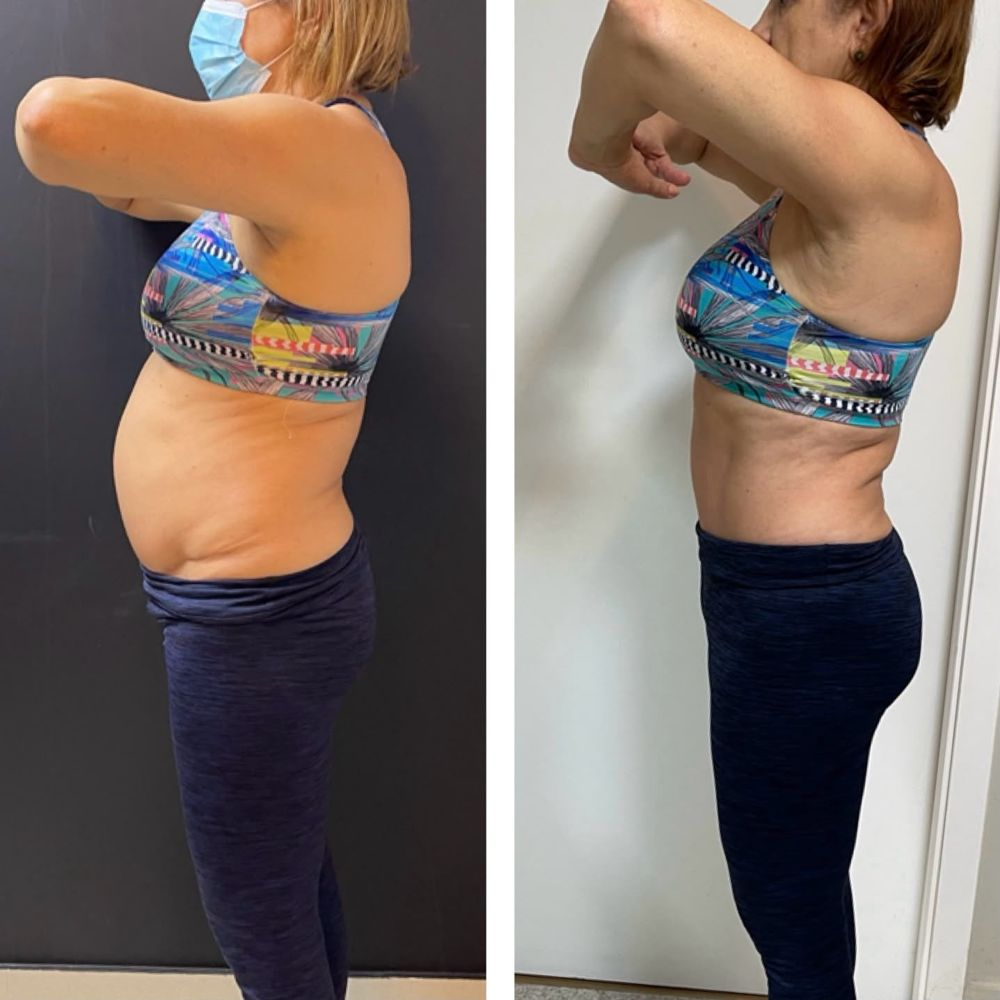
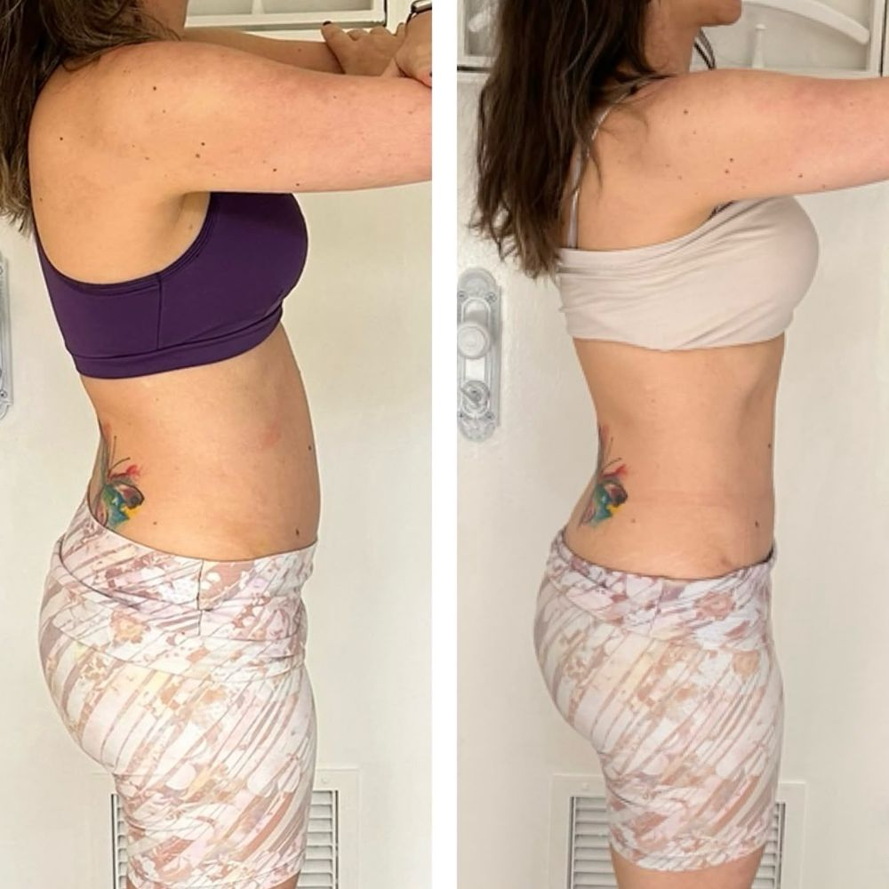
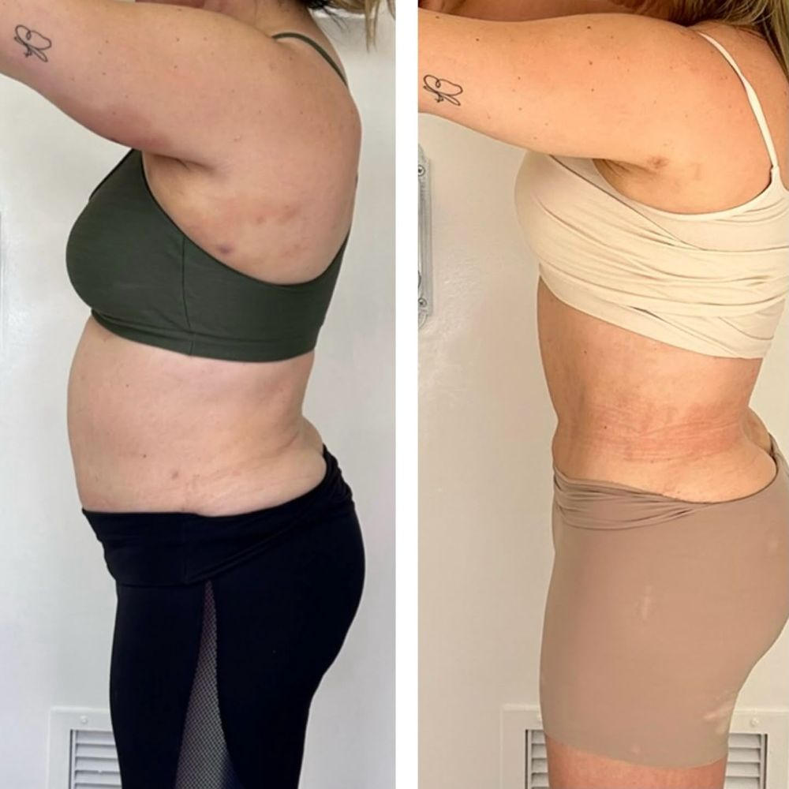

Ninguém te preparou para o que vem depois da alta — e isso acontece com quase toda mulher que opera.
Você foi embora do hospital achando que o estufamento sumiria com drenagens, cintas e tempo. Mas o que ficou foi um corpo travado e uma barriga dura.
A maioria das mulheres respira errado e tem a postura desalinhada — e isso empurra a barriga para a frente o dia inteiro.
O resultado que você sonhou ainda está aí, escondido atrás do estufamento. O que você precisa agora é ativar o que a cirurgia preparou.
O Afinatto foi criado para o pós-operatório real — aquele que começa onde todos já te deram alta e você se sente sozinha.
Histórias reais de mulheres que passaram pelo protocolo Afinatto.
O caminho estruturado que desbloqueia o corpo que a cirurgia preparou.
Avalio sua postura, respiração e a condição real do abdômen. O diagnóstico que nunca te deram.
Em só 15 dias, o estufamento diminui e as curvas começam a aparecer. Alívio e mudança visível.
Abdômen profundo e assoalho pélvico. É aqui que o corpo se modela de verdade. Não é força, é estratégia.
Antes e depois de mulheres que seguiram o protocolo Afinatto após a lipoaspiração e a abdominoplastia.






Fotos reais de alunas. Os resultados variam conforme a dedicação e o acompanhamento de cada caso.
Sou fisioterapeuta especialista em reabilitação abdominal. Criei o protocolo Afinatto para o momento que quase ninguém cuida: o pós-operatório real, depois que todos já te deram alta.
Já ajudei centenas de mulheres a revelar o corpo que a cirurgia preparou — com treinos de 15 minutos por dia, em casa, de forma segura e sem forçar o abdômen.
Por que começamos com uma conversa?
Porque cada corpo chega de um jeito. Antes de qualquer coisa eu preciso entender o seu caso — e te dizer, com honestidade, se o Afinatto faz sentido para você.
Toque no botão e converse comigo ou com o meu time para saber se o Afinatto faz sentido para você. É uma conversa sem pressão.
Vou dizer adeus à barriga